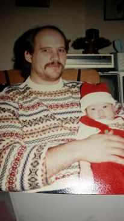
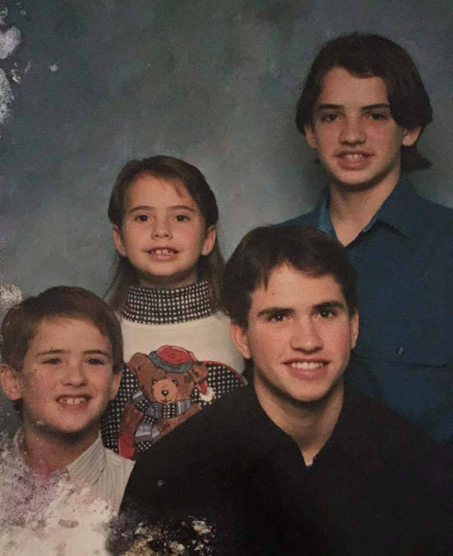
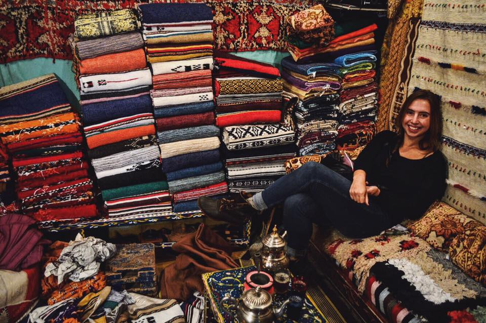
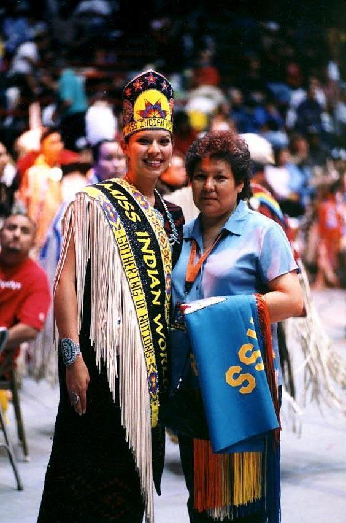
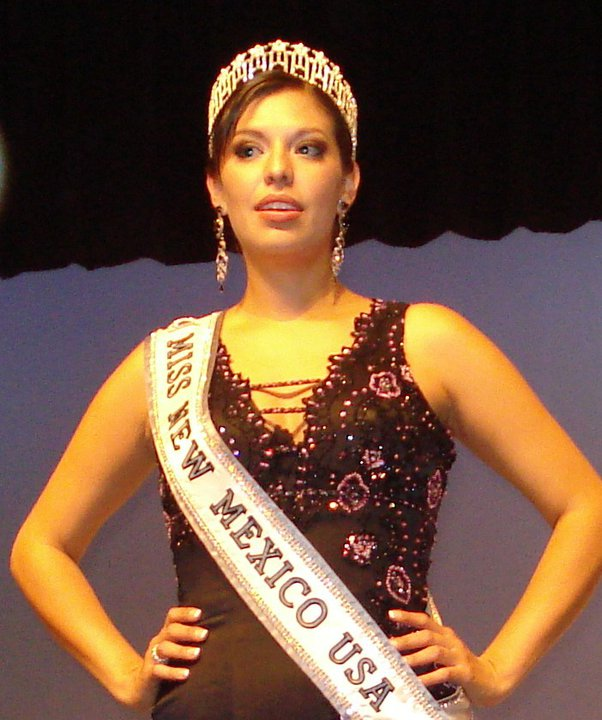
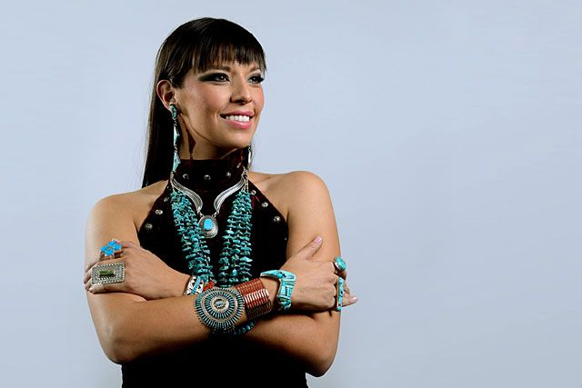
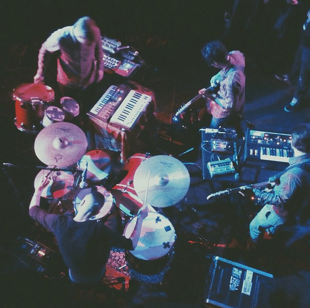
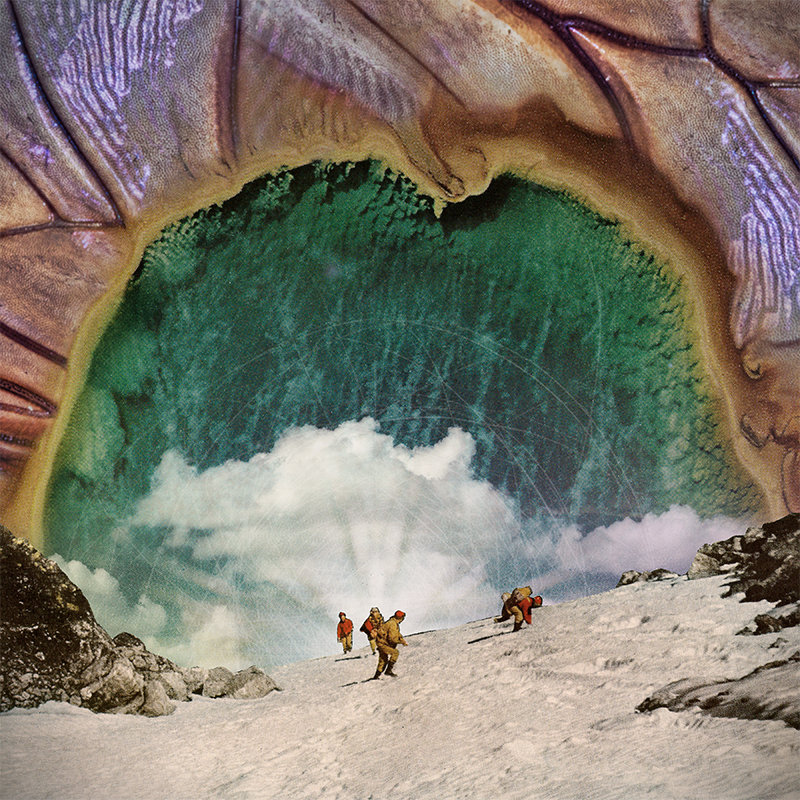
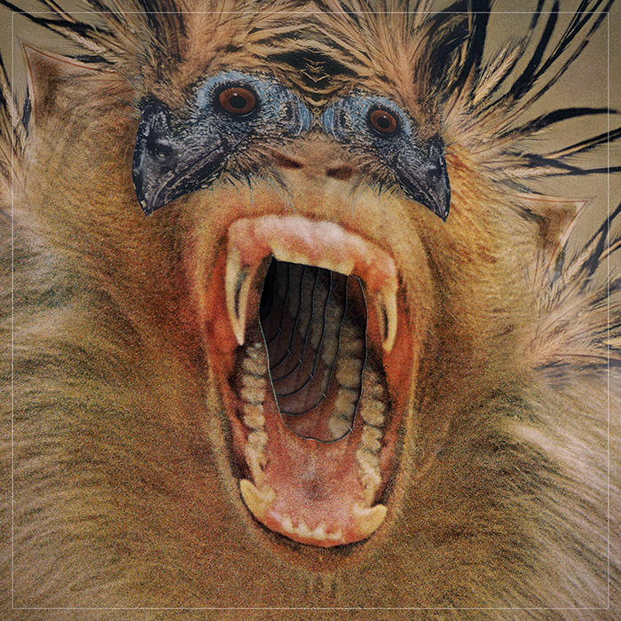

People
According to a private Facebook group I once belonged to, there are 23 people named Onawa. · To my knowledge, there have been two Onawas that have attended the University of Michigan, including myself. The other one seems pretty awesome.
Me
Yooper born to three older brothers. Baby sister came some time after. Ventured South to attend Grand Valley State University, where I dappled in different majors like International Relations and Social Work before settling on Advertising and Public Relations with a minor in Spanish and Nonprofit Administration. After graduating, I stayed in the area working in the beer industry as a marketing manager before moving to Ann Arbor to work for the University of Michigan. After a year, I left for Spain to teach English and improve my fluency in Spanish. Upon my return, I enrolled in the University of Michigan to pursue a MS in Information to focus on HCI with a focus on User Experience Design and Research
  
Onawa Lacy
Perhaps the most famous Onawa is Onawa Lacy, 2006 Miss New Mexico USA and Miss Indian. She is also a native rights activist and model.
  
Onawa Band
Based in Asheville North Carolina, it is a band made up of four individuals. Their discography on Bandcamp is from 2013-2015. They have a song called Lakeless Lake House, which sounds like a name that comes straight out of Michigan. In total, there are three releases from them
  